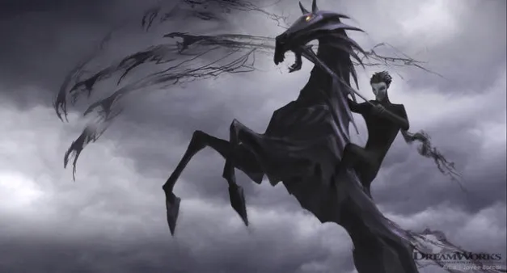

About Pitch Black
Pitch Black, also known as the Boogeyman, is the main antagonist in Rise of the Guardians. He is the embodiment of fear and darkness, opposing the Guardians who represent hope and wonder.

Pitch Black
Pitch’s characteristics
- Pitch Black has dark hair, pale skin, and glowing red eyes. He wears a black cloak, dark pants, and carries a staff that he uses to control his powers.
- Pitch is known for his menacing and sinister personality. He enjoys spreading fear and is often seen as a threat. However, he also has a complex backstory and motivations.
- Pitch is immortal and has the ability to manipulate fear and darkness. He can create nightmares, spread despair, and even control the minds of others.
- Despite his malevolent nature, Pitch is also cunning and resourceful. He is willing to go to great lengths to achieve his goals, often at the expense of others.

Pitch Black
Pitch’s friends
Enemies
Trailer